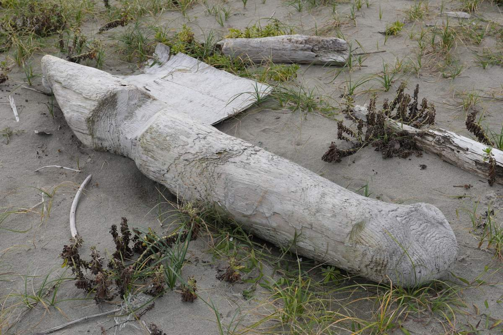

DAY 01 2026.08.26 WED
象潟地区
九十九島と、鳥海山の水をたどる


九十九の礫 ／ Field Notes
2026年8月26日から28日までの3日間、象潟・金浦・仁賀保の3つの地区を歩きました。寺や神社、資料館、漁港、湧き水、油田の跡。見て、聞いて、記録したことが、物語「九十九の礫」と、部屋に置く素材の土台になっています。
地区ごとに、まとめた記録のページがあります。地図や年表、聞き取りの言葉、たくさんの写真とともに。
象潟から金浦、仁賀保へ。スクロールすると、地図の上をたどります。
地図：国土数値情報（行政区域）をもとに作成。各地区は駅の位置、鳥海山は山頂（新山）の位置で示しています。
DAY 01 2026.08.26 WED
九十九島と、鳥海山の水をたどる
DAY 02 2026.08.27 THU
南極をめざした人と、流れ山の町


DAY 03 2026.08.28 FRI
地層に眠る、油と人の記憶


地図：国土数値情報（行政区域）をもとに作成。各地区は駅の位置、鳥海山は山頂（新山）の位置で示しています。
2026年10月4日から6日には、漁港や河口、田の中の流れ山を、ひとりで歩き直しました。部屋に置く浮き球やロープ、流木の多くは、このとき出会ったものです。

